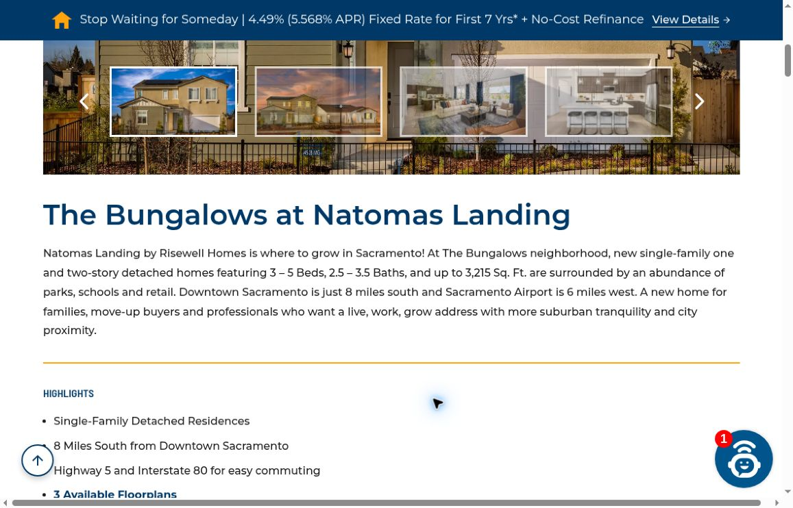
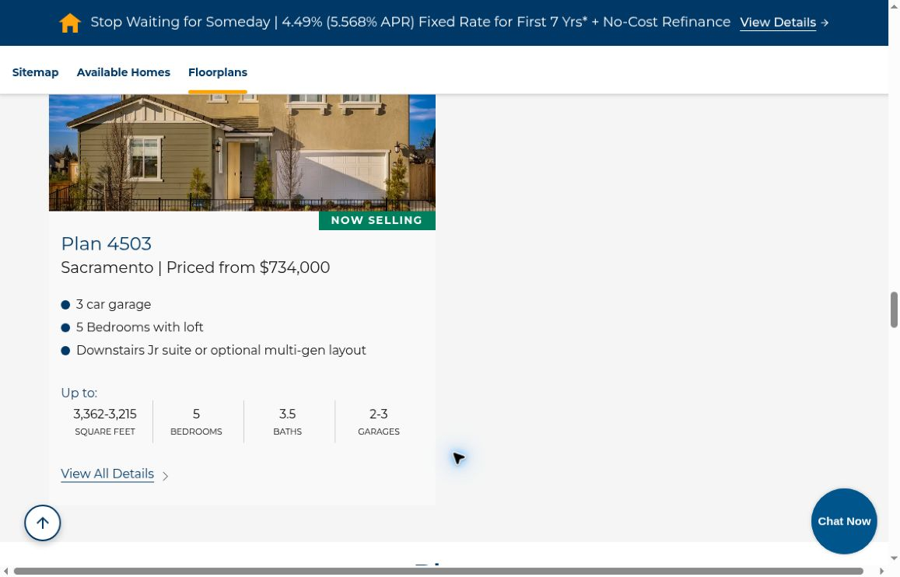
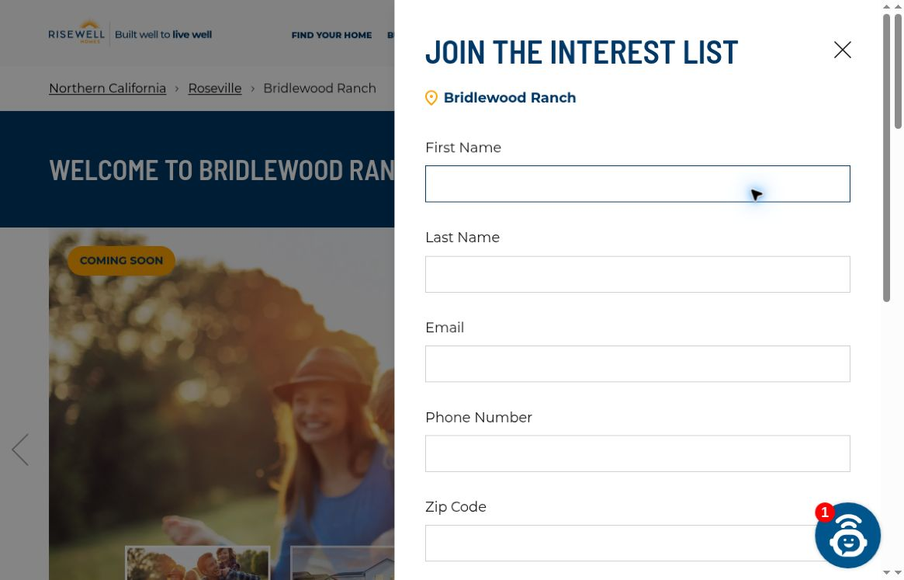

Local Meta ads
Reach nearby people on Facebook and Instagram.
A custom audit / Risewell Homes
We’re Vessel Archive, a local Sacramento marketing team.
A short plan for Risewell Homes.
Reach nearby people on Facebook and Instagram.
Real videos, photos and clear messages.
Get found through your Google Business Profile, site and blogs.
What you do well
Your Northern California pages give buyers real homes to compare, with floorplans and clear next steps.
Keep that foundation. Make the facts and first inquiry easier to trust.
Northern California website ↗
What we found / 1 of 2
The Bungalows page says downtown is eight miles south. Its highlights say the homes are eight miles south of downtown. Buyers must resolve the conflicting directions themselves. Bungalows location copy ↗

The Plan 4503 card shows 3,362–3,215 square feet under “Up to.” Buyers comparing space get an unclear answer at a key decision point. Plan 4503 card ↗

What we found / 2 of 2
The Bridlewood Ranch signup shows first name, last name, email, phone and ZIP fields. A shorter first step may help early-stage buyers join. Friction to test, not measured lost leads. Roseville interest form ↗

How we would help
Confirm the direction with the sales team and map. Correct the highlights and reuse the same checked wording across listings.
Confirm each plan’s size and options. Show a normal low-to-high range, explain the options, and update every related card.
Test name and email first. Ask for phone and ZIP later where practical. State which updates buyers will receive, and compare completed inquiries.
Ideas for your next shoot
Show the Roseville location and explain what joining the interest list gives buyers.
Show how the rooms connect. Explain which options change the size.
Film nearby places and a clear map, using checked distances and directions.
A proposed starting plan / 1 of 2
We’d correct the facts, test a simpler signup and set a clear brand direction. With approval, script, shoot and launch the first local videos within two weeks alongside a focused landing-page rebuild.
Compare which videos and pages bring useful calls and inquiries. Send approved ads to the improved pages and keep the clearer signup version.
Proposed timing depends on scope, access and approvals.
A proposed starting plan / 2 of 2
Make more content around the homes buyers ask about. Refresh approved ads and review listing facts with sales before each update.
Each month: shoot, launch, learn and improve.
Proposed timing depends on scope, access and approvals.
From one local team to another
We hope these notes help your team. The site already gives buyers plenty to explore. These fixes would make the next step clearer.